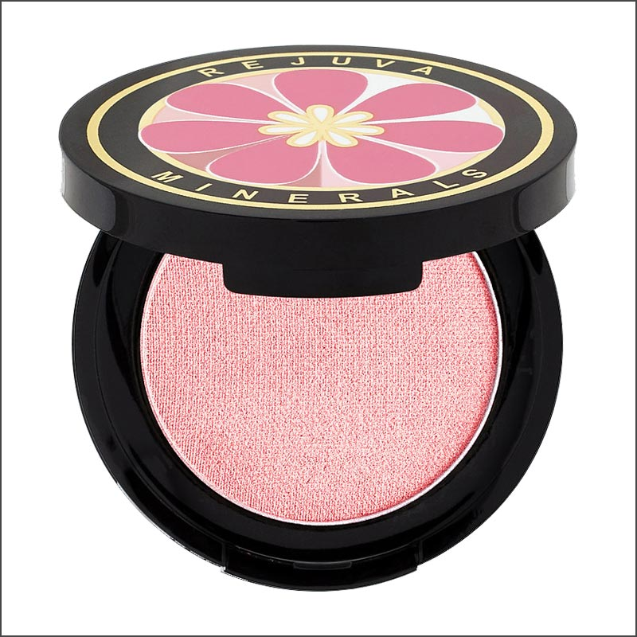

<link rel="stylesheet" href="../css/style.css">

<main>

    <a href="/product" class="product_selecioned"id="container_all_products"> 


        <h1 class="name_product_selectioned">Mult purpose powder - blush & Eye</h1>

        

        <span class="price_product text_info_product">preço:</span>


        <p class="description_product_selectioned">
            Description: Our Multi Purpose Pressed Powders may be used for blush or eye shadow. Blended with antioxidants from Certified Organic Fruits, Berries & Botanicals*. Made without any gluten containing ingredients. Mica free Pink Parfait and Papaya will
            offer a natural, ultra sheer semi-matte finish. The petals from beautiful crushed red roses that are found in Pink Parfait, are valued for their natural color and delightful aroma that they provide! Acai Berry will offer a natural, ultra sheer
            satin finish (mica added). VEGAN. Image one is Pink Parfait. Image two is Papaya, and image three is Acai Berry. Model in image four is wearing Papaya. Model in image five is wearing Acai Berry. To see a demonstration of Papaya, click on the
            video and fast forward to 3:44. Enjoy! This product is EWG VERIFIED™ and rated 'CLEAN'in the Think Dirty app! BPA and Phthalate free packaging. Plastic parts of compacts are recyclable. *Tiny flecks of fruit and botanical particles may be
            visible in powder. Pink Parfait and Papaya are Titanium Dioxide and Mica free. Net Weight: 2.8 gm.
        </p>
        </div>
        <main>